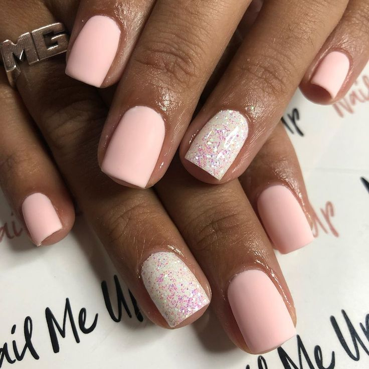

Las uñas semipermanentes son un tipo de manicura que utiliza un esmalte especial que combina las propiedades del esmalte tradicional con las del gel, proporcionando una mayor durabilidad y resistencia en comparación con el esmalte convencional. A continuación, se detallan algunos aspectos clave sobre las uñas semipermanentes:
Características de las Uñas Semipermanentes
Material:
El esmalte semipermanente está formulado con una mezcla de polímeros que se endurecen bajo una lámpara UV o LED.
Ofrecen una mayor flexibilidad y adherencia que el esmalte tradicional.
Aplicación:
Preparación de las Uñas: Las uñas se limpian, se empujan las cutículas hacia atrás y se liman ligeramente para crear una superficie adherente.
Aplicación del Esmalte: Se aplica una capa base, seguida de dos capas de color y una capa superior. Cada capa se cura bajo una lámpara UV o LED.
Curado: El curado bajo la lámpara UV o LED es esencial para endurecer el esmalte y fijarlo a las uñas.
Durabilidad:
Las uñas semipermanentes pueden durar de dos a tres semanas sin descascararse o perder brillo.
Son resistentes a los golpes y arañazos, manteniendo una apariencia impecable por más tiempo.
Remoción:
La remoción requiere un proceso específico que generalmente implica envolver las uñas con algodón empapado en acetona y envolverlas en papel de aluminio para ablandar el esmalte. Luego, el esmalte se retira suavemente con un empujador de cutículas.
Es menos dañino que el retiro de uñas de gel o acrílicas, pero aún así, se recomienda hacerlo profesionalmente para evitar dañar las uñas naturales.
Ventajas de las Uñas Semipermanentes
Durabilidad y Resistencia:
Permiten mantener una manicura perfecta por más tiempo en comparación con el esmalte tradicional.
Resistentes a los golpes y arañazos diarios.
Apariencia Brillante:
Mantienen un brillo intenso y una apariencia fresca durante semanas sin desvanecerse.
Secado Rápido:
El curado bajo la lámpara UV o LED hace que el esmalte se seque al instante, eliminando el tiempo de espera y el riesgo de arruinar la manicura antes de que se seque completamente.
Variedad de Colores y Diseños:
Disponibles en una amplia gama de colores y acabados, permitiendo la creatividad en el diseño de uñas.
Cuidado de las Uñas Naturales:
Es importante dar un descanso a las uñas entre aplicaciones para evitar debilitamiento y daños.
Aplicar aceite de cutícula y cremas hidratantes regularmente para mantener la salud de las uñas y la piel circundante.
Remoción Adecuada:
La remoción incorrecta puede dañar las capas superiores de las uñas naturales. Es recomendable acudir a un profesional para la remoción.
Exposición a Lámparas UV/LED:
Aunque la exposición es breve, algunas personas prefieren usar protectores solares o guantes protectores para minimizar la exposición a los rayos UV durante el curado.
En resumen, las uñas semipermanentes ofrecen una opción de manicura duradera y resistente que mantiene su apariencia impecable por semanas. Son ideales para quienes buscan una solución de manicura práctica y de larga duración con un acabado brillante y profesional.

Pasos para Semipermanente
Retira las cutículas,aplica una pequeña cantidad de eliminador de cutículas en la placa de la uña y alrededor de las cutículas. Espera 2-3 minutos y empuja tus cutículas hacía la raíz de la uña con suavidad ayudándote de un palito de naranjo. Es una zona muy sensible y propensa a infecciones así que hay que hacerlo despacito y con mucho cuidado. Al retirar las cutículas de la base de las uñas nos aseguramos que no haya entrada de aire bajo ellas. Si no se realiza este paso el esmalte no se adhiere correctamente a la uña y puede caerse.
Pule las uñas,con una lima pulidora o un taco pulidor de abrasión suave (180/240) vamos a retirar de la base de la uña, en la que vamos a aplicar el esmaltado, todo el exceso de grasa, impurezas y partículas que haya. Cuando la uña vaya quedando mate, sin brillo significa que la uña está lista y preparada para empezar a trabajar.
Moldea las uñas,toma una lima normal y moldea la silueta de tus uñas a tu gusto: cuadradas, redondas, almendradas, coffin, stilleto, squoval… ¡Lo que te apetezca!
Limpia las uñas,con una toallita de celulosa impregnada en un cleaner o líquido desengrasante, lo pasamos por las uñas. Este paso, nos facilitará el limpiado de la uña además de asegurarnos una buena adherencia del esmalte. Aplica un primer sin ácido, con el pincel muy bien escurrido, en toda la uña, sin tocar la piel ni la cutícula y deja secar al aire.
Aplica la base,aplica una capa de base y deja unos 30 segundos que se seque en lámpara Led (a partir de 36w). Este paso sirve para adherir el color a la uña y protegerla. Hay numerosas opciones según las necesidades de tus uñas: fortalecedoras, autonivelantes, hidratantes, adhesivas, etc. debes elegir la más idónea para tus uñas pero ante la duda opta por una base hidratante o con proteínas. Esas nunca vienen mal.
Aplica el esmalte,ahora comenzaremos a aplicar las capas de esmalte semipermanente. Es muy importante durante la aplicación no tocar la cutícula para evitar futuros levantamientos del esmalte o infecciones. Empezaremos aplicando una capa desde la base de la uña para ir en dirección a la punta. Da pequeñas pasadas y ve extendiendo el esmalte por la uña. Los mejores manicuristas no olvidan poner base, esmalte y top coat en la línea exterior de la uña (lo que limas). Este gesto ofrece una protección extra, ya que aísla la uña del agua, uno de los principales causantes de que la manicura dure menos.
Empieza y termina una uña antes de ir a por la siguiente, no vayas alternando. Realiza una mano entera antes de ponerla en la lámpara para que todas las uñas sequen por igual. Recomendamos, en líneas generales, mantener secando unos 60 segundos cada capa. Recuerda que, en este paso, es muy importante hacer dos capas para un acabado perfecto y un color intenso, la segunda capa puede ser levemente más gruesa que la primera.
Aplica el Top Coat,aplica una capa transparente sin residuos (también llamados No Wipe Top Coats), así no tendrás que limpiarlo con un cleaner al acabar, y lo dejas secar otros 30 segundos. Este es el último paso para conseguir una manicura de larga duración y de acabado profesional. El top coat sella el color y encapsula las capas de esmalte aportando un efecto brillante o mate a la manicura. Finaliza aplicando un aceite de cutículas.